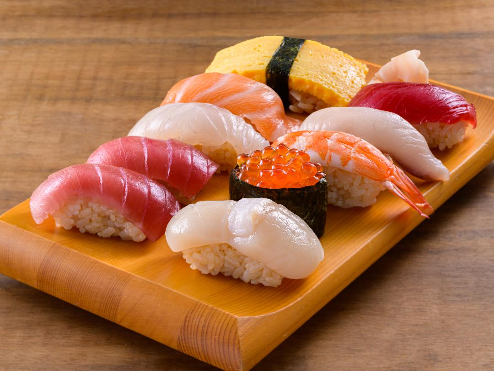

HOME
寿司

どんな料理？
寿司は新鮮な魚や野菜を酢飯にのせた日本の伝統料理です。美しい見た目と健康面での利点から世界中で人気があり、多くの寿司レストランで楽しめます。
ぜひ一度、寿司の魅力を味わってみてください。
材料
- 酢飯
- ネタ: 新鮮な魚介類や野菜
- 海苔/
-
- 調味料: 醤油 ワサビ
- 日本のカレールー
作り方
- 白米を炊いて酢、砂糖、塩で味付けし、酢飯を作ります。
- 魚介類を薄く切ります。
- 酢飯を小さなボール状に握り、その上に切った魚介類をのせます。
- 海苔を敷き、その上に酢飯と具材をのせて巻きます。
- 醤油やワサビを添えて完成です。